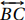

3.3 A Circunferência de Apolônio
A Circunferência de Apolônio é o lugar geométrico dos pontos cuja razão das distâncias entre ele e dois pontos fixos é constante. Ela está diretamente ligada à divisão harmônica de um segmento (veja Seção 3.1.2).
Sejam A e B dois pontos distintos e seja K >0 (K ≠ 1). O lugar geométrico dos pontos P tais que $$\frac{AP}{BP} = K$$ é a circunferência de diâmetro CD em que C e D dividem, respectivamente, o segmento AB, interna e exteriormente, na razão K.
A circunferência citada no Teorema 3.15 é conhecida como Circunferência de Apolônio e é denotada por .
Note que, se K = 1, teríamos que AP = BP e pelo Teorema Teorema 2.4, P seria ponto da mediatriz de AB e não de uma circunferência.
Observemos que os pontos C, D ∈ . Sejam A e B tais pontos fixos e consideremos o segmento AB e os pontos C e D, colineares, tais que C divide o segmento AB interidnte, e D o divide exteriormente, em uma razão real K (K > 0 e K ≠ 1). Portanto, C não é ponto médio do segmento AB, e C e D são conjugados harmônicos em relação ao mesmo. Deste modo, temos que $$\frac{AC}{BC} = \frac{AD}{BD} = K,$$ e C e D são pontos desse lugar geométrico.
Primeiramente, seja P um ponto no mesmo lugar geométrico, mas diferente de C e de D, tal que
. Necessariamente P não pertence à reta  , pois C e D são conjugados, logo são únicos. Queremos verificar que o ponto P pertence à circunferência de diâmetro CD.
, pois C e D são conjugados, logo são únicos. Queremos verificar que o ponto P pertence à circunferência de diâmetro CD.
De fato, temos que . Pelo Teorema da Bissetriz Interna (Teorema 3.8), PC é bissetriz interna do ângulo .
Sabemos também que . Pelo Teorema da Bissetriz Externa (Teorema 3.9) PD é bissetriz externa do ângulo . Sendo assim o ângulo é reto e P pertence a uma circunferência de diâmetro CD (veja Corolário 2.9).
Agora, por outro lado, suponha que P seja um ponto na circunferência de diâmetro CD. Queremos verificar que o ponto P ∈ , ou seja, $$K = \frac{AP}{BP}.$$
Considere os pontos M e N tais que M está entre A e P, e BM é paralelo a DP; e N está no prolongamento do segmento AP, no sentido de P, de modo que BN seja paralelo a CP, como ilustrado abaixo:
Aplicando o Teorema Fundamental de Proporcionalidade (Teorema 2.17), e olhando para o triângulo ΔABN e o segmento CP, temos $$\frac{AC}{BC}=\frac{AP}{PN},$$ logo $$\frac{AP}{PN} = K.$$
Além disso, pelo mesmo Teorema e desta vez olhando o triângulo ΔAPD e para o segmento MB, temos $$\frac{AD}{BD}=\frac{AP}{MP},$$ logo $$\frac{AP}{MP} = K.$$
Daí, \begin{equation} K = \frac{AP}{MP} = \frac{AP}{NP} \Rightarrow MP = NP. \hspace{10 cm} (3.2) \end{equation}
Devido ao paralelismo entre BM e DP, e entre NB e CP, notamos que $$M\widehat{B}N \equiv C\widehat{P}D = 90^{\circ};$$ e pelo Corolário 2.9 temos que MN é diâmetro de uma semicircunferência que contém B. Além disso, como MP = NP, temos que P é ponto médio de MN, logo P é centro da semicircunferência e MP = NP= BP. Pela Equação 3.2 temos: $$K = \frac{AP}{BP}.$$
Portanto, a Circunferência de Apolônio são pontos que possuem a propriedade citada no início desta seção e é definida a partir da fixação dos conjugados harmônicos de um dado segmento, desde que a razão seja diferente de 1. Agora pode ser enunciado o seguinte Teorema (3.16):
Em um triângulo escaleno, se M e N são conjugados harmônicos de um dos seus lados e M é o pé da bissetriz interna relativa a este lado, então o vértice desta bissetriz está em uma, e somente uma, Circunferência de Apolônio.
Considere o triângulo ΔABC, seu lado BC, sua bissetriz AM e o ponto N na reta , tal que M e N são conjugados harmônicos do lado BC. Deseja-se mostrar que existe uma única circunferência de Apolônio associada ao lado BC do triângulo.
Pelo Teorema da bissetriz interna, temos $$\frac{AB}{BM} = \frac{AC}{CM} \Rightarrow \frac{AB}{AC} = \frac{BM}{CM}.$$
Pela Definição 3.1 (conjugados harmônicos) temos $$\frac{BM}{CM} = \frac{BN}{CN}.$$
Logo temos que $$\frac{AB}{AC} = \frac{BN}{CN}$$ e, pelo Teorema da Bissetriz Externa (3.9), AN é bissetriz externa.
Assim AN e AM são perpendiculares e MN é diâmetro de uma semicircunferência que contém o vértice A. Finalmente, $$\frac{BM}{CM} = \frac{BN}{CN} = \frac{AB}{AC}$$ mostra que a circunferência de diâmetro MN é circunferência de Apolônio.
Agora, suponha que exista outra circunferência de Apolônio que contenha o vértice A e possua diâmetro MN'. Como MN' está na reta e M pode possuir apenas um conjugado em relação aos pontos B e C, temos que N' = N.
Deste modo, um triângulo escaleno está associado a três circunferências de Apolônio, tais que passam por um vértice e pelo pé da bissetriz relativa a este vértice.
Em um triângulo:
(a) Isósceles a base não possui círculo de Apolônio associado. (b) Equilátero, não há círculo de Apolônio associado.Observe que na base de um triângulo isósceles e nos lados de um triângulo equilátero o ponto médio coincide com o pé da bissetriz. Neste caso a divisão ocorre na razão 1, portanto não há formação de círculo, isto é, as bissetrizes externas ficam paralelas aos lados opostos e o ponto conjugado de cada pé de bissetriz não é determinado.